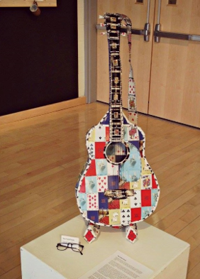
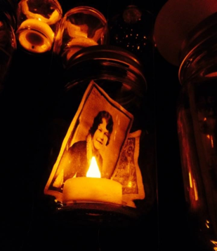

Following Suit: A Pursuit of Material Process in Multimodal Composition
Kali Jo Wacker
University of Kansas
(Published February xx, 2020)
Introduction
If I was to say that a kaleidoscope is only as striking as the colors found within, most audiences would probably nod heads in initial agreement. It would seem plausible, since the patterned rainbow is what keeps people occupied when they stumble upon the bejeweled tube. However, a kaleidoscope is only as striking as the light that shines through it and bounces off its internal mirrors. A kaleidoscope depends on illuminated movement. Similarly, I propose, does new materialism and its presence within the composition classroom and theories of multimodal rhetoric. This article offers up a perspective in which we embrace multimodal composition’s roots in multiliteracy and entangle ourselves within the many modes and materials of communication. In essence, this article seeks to trace the illuminated movement, which will be defined in later paragraphs, of new materialism within, through, and outside of rhetorical spaces. Finally, an analysis of a small gallery exhibit entitled, Following Suit will provide visual examples for this concept.
This exploration is driven by, and conducted with, a focus on new materialist theory and various pedagogical theories found within composition and rhetoric. This article’s use of new materialist theory follows most closely with Coole and Frost’s descriptions in the introduction of Bennett, et. al’s “New materialisms: Ontology, agency, and politics.” In this introduction, they claim that a new materialist approach is one that is “evincing eminent modes of self-transformation that compel us to think of causation in far more complex terms; to recognize that phenomena are caught in a multitude of interlocking systems and forces and to consider anew the location and nature of capacities for agency” (9). For Coole and Frost, agency is part of an ever-transforming process that extends to many networks and connections, and as a result, is always moving. Consequently, for this article, illuminated movement is defined as the performance of materials that sheds light on, or illuminates, the relationships between interlocking systems of communication that are not initially obvious to the everyday observer. Simply put, instead of focusing on the question of what something is doing/causing, illuminated movement pertains to the processes surrounding the actants, or rather, the question of how something is doing/causing something and a variety of something elses. As a result, this article presents itself as a way of looking, particularly through the lens of Barnett and Boyle when they state, “Rhetoric, too, might well designate the art of being between: of being between things and yet also being their means of connection” (5). I propose that our composition classrooms benefit from this understanding of rhetoric, of being and seeing between, because instead of emphasizing a message or an actant within a particular communication form (or even the message of each particular material within that form), it necessitates the acknowledgement of multiple and changing messages that are produced by surrounding and ongoing processes.
Jody Shipka’s work is helpful in providing a baseline for new materialism’s connection to composition and the composing process. In her multimodal task-based framework for composing, Shipka asks students to construct multiple approaches to a single assignment, in efforts of facilitating new dialogue about how students can approach materials within the classroom and the worlds outside of it (Toward a Composition, 279). Many of these assignments are returned in forms alternative to the traditional essay. They use a variety of materials, such as wine bottles, ballet shoes, children’s toys, and blueprints—just to name a few (Shipka, “Negotiating Rhetorical” W345). This plurality of design hints at the multiplicity of underlying messages. However, this acknowledgement is only the very tip of a very large iceberg. It is one thing to notice the messages; it is another to pinpoint how they came into existence and how they continue to be and become.
To help chisel away at this idea, especially with its high-risk for becoming too abstract, Douglas Eyman’s definition of digital rhetoric, Jody Shipka’s study of material engagement in composition classrooms, and the “materializing” of Kairos (814) by Sheridan, et al., are used in this article to help identify and understand the many messages embedded within composing processes. Additionally, within each example of scholarship mentioned above, it is hard to deny the presence of the initial goals and practices of multiliteracy and multimodal composing, and it is in this context that communication forms—digital, physical, and every combination in between—can be helpfully seen as intertwined and with binaries tangled, mangled, and interwoven.
Coined by The New London Group in their 1996 article, “A Pedagogy of Multiliteracies: Designing Social Futures,” and developed further in the Bill Cope and Mary Kalantzis’s resulting book in 2000, Multiliteracies: Literacy Learning and the Design of Social Futures, the term “multiliteracy” addresses the increased globalization of communication and literacy in terms of people, media, and public exchange. More recently, Kathleen Tyner explores this term in her 2014 book, Literacy in a Digital World: Teaching and Learning in the Age of Information, where she states: “Multiliteracies related to communication and information, notably media literacy, computer literacy, visual literacy, information literacy, network literacy, and technology have stepped forward to define the changing, amorphous shape of communication needs for a society awash in electrical sounds, images, icons, and texts” (64). This “amorphous shape of communication needs” acknowledges five communicatory modes—Linguistic, Visual, Audio, Gestural, Spatial, with an added sixth, Material, which brings in a new materialist literacy, which will be highlighted and explained throughout this article. All have fluid relationships to one another, and it is this fluidity that begs for a new way of looking, one in which agency is seen as amorphous as the messages it provokes. However, instead of specifically focusing on Bennett’s “thing power” (Vibrant Matter 3) in which actants and forces impose their will on each other, this article looks at this power through a distanced Latourian lens of “tracing of associations” (5). This article’s idea of illuminated movement, then, works alongside Latour’s networks and Bennett’s thing power to understand the processes that surround, work within, and move through them. Since these ideas are focused on process, I analyze a small art gallery exhibit that I created my senior year of undergrad as a journalism and graphic student exploring multimodal composition. This allows for a deeper look into the processes underlying its creation. Since the exhibit’s construction was based on growing scholarship on multimodal and multiliteracy practices within the composition classroom, such as designing and making, this article provides both educators and students with insight into multimodal composition’s rhetoric of performance, preservation, and revision via a new materialist way of looking. In concluding, I provide a course activity and assignment that corresponds to this exhibit and is designed to illuminate the kaleidoscopic nature of multimodal composing.
Designing & Making
The terms “designing” and “multimodal composing” have a deep history together. The often-cited 1996 manifesto of The New London Group positioned the act of designing as a shaping and re-contextualization of meaning, based on what structures (environments, texts, values, people, and technology systems) are available (75). The Group’s focus on designing was to demonstrate how, as a semiotic activity, designing would “more or less normatively reproduce, or more or less radically transform, given knowledge, social relations, and identities, depending on the social conditions in which Designing occurs” (75). As such, it could be used as an umbrella term similar to reading, seeing, listening, and writing, which were all designing acts according to The Group (75).
Variously echoed by composition scholars Gunther Kress, Jennifer Rowsell, Mary Sheridan, Mike Sharples, and envisaged by design scholar, Richard Buchanan, designing was juxtaposed with the performance of writing. In 1985, Design Issues published Buchanan’s call for rhetoric and design to be seen as synonyms, or at very least, highly compatible in structure and intent. Composition took up this call. Kress contended that design is the process of meaning-making when the rhetorical purposes of the designer (teacher, student, communicative human being) become messages, with writing being one instantiation (28). In 2010, multiple ethnographic case studies and interviews conducted by Sheridan and Rowsell revealed that design answers similar questions in the corporate world as those asked in the composition classroom, especially those pertaining to how reading, writing, and listening are dynamic, relational, and performative acts that are transformed through multimedia and multimodality (Sheridan and Rowsell 33). Design and writing were seen as having the same or similar bases of inquiry.
However, Sharples had already proposed an answer to these questions in his 1998 book, How we write: Writing as Creative Design, by appropriating the qualities of design that are identified in Brian Lawson’s book, How Designers Think. His argument was more academia-focused and had just started to attribute designing to multimedia and technology, particularly with early case study examples of online authoring, adventure gaming, and word processors. However, with technology just beginning to change the writing landscape, his aim was made more in effort to use design as a way to demystify what he saw as the ambiguous writing process and less a call to learn from existing designing practices from outside the academy, as was the goal of Sheridan and Rowsell a decade later.
Making then, surfaced in the early 2000s as an act of multimodal composing and design that supported a heightened interest in materiality and New Materialism studies. Making took on similar meaning-making attributes to design but did so with an emphasis on the physicality of communication. Performance was no longer just process; here, in the realm of making and materiality, it became embodiment. In fact, in David Sheridan’s 2010 article, “Fabricating Consent: Three-Dimensional Objects as Rhetorical Compositions,” he claimed that great rhetorical freedom and power could be gained from tapping the “rhetorical potential of three-dimensional fabricated objects.” When Sheridan wrote about making, he focused on two main principles: 1) people and process are integrated and 2) when digital die cutters and sewing machines and 3D printers meet with what composition often associates with design, this act of composing morphs into making in its most general form . This idea is highlighted in many of Jody Shipka’s composition courses in which she has assigned material-driven projects, such as the “Mass Observation Project” in which students recorded the everyday lives, interactions, and performances of their classmates to study actions, reactions, and interpretations of events, communication, and things over the span of an ordinary (or extraordinary) weekend (“Mass Observation Project”). However, in both these instances of scholarship and practice, the multimodal composing process was comprised of two major parts—multiliteracies and materialization—and the constant collision of these two components are what make up my theoretical framework for this article. They are what require a renewed way of looking.
Scholars like Jody Shipka and Matt Ratto, Megan Boler, and Ronald Deibert focus on the act of making largely to establish a theoretical backing and pedagogical application for the more specific expressions of making: crafting, tinkering, hacking, and remixing. Each of these forms of making have different values and expectations placed upon them—crafting scholarship largely focuses on composing with traditional practices, early craftspeople mentalities, anti-capitalism, nostalgia, and preservation. Hacking often brings forth ideology from programming, counterculture, anarchism, and revision (Hendery, Rachel et al,) Tinkering values a process-based emphasis on exploration and the performance of composing, and remix rebirths composition’s long-time relationship with revision and re-seeing as a very physical, and often digital, collaboration of recreated, appropriated, and recontextualized communicative works. As these examples attest, the underlying processes of multimodal composition continue to revisit the rhetorical elements of performance, preservation, revision, which are often principal features of the composition classroom.
As a result, regardless of which variation of design and making is being explored—both are largely documented through teacher scholarship (Shipka, Ratto) and ethnographic case studies (Tomko, et al.) in attempt to explain what happens during the making/designing process as well as to facilitate it in a classroom setting. Writing scholarship has used “teaching moments” of producers’ daily work lives (Sheridan and Rowsell 61) to discuss the need for critical evaluations of and experimentation with design and has offered example write/design/make assignments, syllabi, and activities for teaching multimodal composing (Arola, Ball, and Sheppard). This article does something similar, and a corresponding assignment guideline can be found in the appendix.
Together, making and designing help create a model for a combined way of thinking, one in which communication forms are often tangled, and where digital and physical elements are a part of the same composing process, regardless of how tactile or traditional a particular composition or text seems. It situates multimodal composition as a process of performative hybridity, intermittent preservation, and continuous revision.
I now turn to a descriptive analysis of my undergraduate senior showcase, Following Suit, which operates as an art-based pedagogical model for how a new materialist perspective can strengthen students’ understanding of composition, writing, designing, and making in their increasingly multimodal, and inescapably digital, academic environments. This exploration seeks to answer the question of: “What digital modes are folded within, and are a part of, the underpinnings of the material? And more specifically: “How does a tactile exhibit teach students about multimodal composing in regard to performative hybridity, presentation, and revision?”
Through an investigation of material objects—both on the process and product level—I plan to identify how similar composition methods can be transferred into the writing classroom and can allow for a more multifaceted understanding of composition and its materially digital existence among my students. For the sake of clarity, I will first describe my gallery exhibit in enough detail and imagery to give my readers a general idea of the showcase, both in process and product. Then, I will focus on three main art pieces, briefly analyze them materially, and discuss resulting digital realities to show their tangled nature. Finally, a classroom activity that draws upon similar principles will be discussed and paired with a follow-up assignment in the appendix.
Following Suit
In the spring of 2013, the idea for my Following Suit exhibit began with a single artwork constructed in my introductory sculpture course. The task set before us was simple: pick a subject and material that are seemingly unrelated and create something that has a collective meaning. Consequently, I took playing cards from my family’s game room and tapestry thread in memory of my grandmother’s quilting and constructed a full-size guitar, and in the cards’ new configuration, a small part of my family’s heritage was conveyed.
Although this might seem rather human-centric with materialist rhetoric being secondary to my personal manifestations, I wanted to show how something as important as family heritage could be embodied through an eclectic cacophony of typically unrelated, and sometimes seemingly negligible, materials. I wanted to repurpose their original use, imagery, and agency and transpose new meaning upon them by extending their embedded material potentialities. Additionally, I wanted to demonstrate how, to me, art is in the intentionality behind the materials selected, the creative choices made, and the consequential dialogue that persists thereafter. It’s in the futurity, much like Laurie Gries’ points out in Still Life with Rhetoric: A New Materialist Approach for Visual Rhetors (12) and in the “vibrant materiality” articulated by Jane Bennett that “runs alongside and inside humans” and gives particular focus to the agencies and exigencies of related and unrelated materials (viii). In essence, I wanted the materials to speak to me, and for my story to speak in cadence with those materials. As Carole Blair writes: “Rhetoric's materiality constructs communal space, prescribes pathways, and summons attention, acting on the whole person of the audience. But it also allows a rhetorical text to ‘speak’ by its mere existence, to endure by virtue of the durability of its composition, to be preserved by particular modes of reproduction, and to act on other texts (48).” This speaking is what I wanted my audience to think about as they roamed the art gallery and what I want my composition students to grapple with during my courses. I want my students to ponder messages being communicated that aren’t necessarily in writing. I want them to look for the messages that don’t even reach the final product. I want them to think about the dialogue that exists between the materials, instead of just between the artist and audience.

Figure 1. “The Guitar Player,” mixed media sculpture, 2013
The guitar shown in Figure 1 became the main subject of an automated slideshow overlaid with spoken audio recordings and acoustic guitar background music. I used this short example of multimedia to introduce a multimodal project for my English 101 sections at the University of Kansas. My reasons for this was twofold: First, I wanted to demonstrate how messages—even those not written or spoken—can be recycled and manipulated for new purposes. Second, I wanted to show my students how this movement from one medium to another doesn’t completely erase the one that came before. A sewn deck of cards was preserved and repurposed even half a decade after its original creation. The physical never left the digital and this hybridity is key in understanding the original and repurposed message. As Shipka writes, “Highlighting the various texts, tools, strategies, practices, and participants—both human and nonhuman—that play a role in supporting, facilitating, altering, and at times, even thwarting or forbidding the production of a focal text, product or performance allows us to move beyond human-centered or human centric notions of agency, effect, and collaboration” (“Transmodality” 253). This cycle between process and product allows us to acknowledge the potential for materials to create alongside the creator. My artworks’ vitality, its speaking, changed and continues to change with every person and every mode that interacts with it. In the sections to follow, I will provide a mini-analysis of the materials used in three specific pieces (“Nafplio,” “The Family Tree,” and “Raising Butterflies”) and then show how their material potentials were expanded and how they answer multimodality’s call for hybrid performance, preservation, and revision.
Hybrid Performance
Although at first glance, “Nafplio” is merely a grouping of playing cards, paint, and old bus stubs, it surpasses a singularly tactile existence. In Digital Rhetoric: Theory, Method, Practice, Douglas Eyman states, “The term ‘digital rhetoric’ is perhaps most simply defined as the application of rhetorical theory (as analytic method or heuristic for production) to digital texts and performances” (Eyman 44). It is within the final word—performance—that the heart of this artwork lies. “Nafplio” started as a photo taken on a Canon t3i Rebel. Standing on a rock path, I captured it along with 4,000 other photos of Greece. It was transferred to my MacBook Pro, edited on Photoshop, where I adjusted the size and saturation, and then printed in several orientations. Many could place these instantiations within the digital performance category of Eyman. However, what of the painting? Without the photo or the digital origins of my collected paper trail, my final project would never have been created, and the materials I gathered would have never achieved the level of agency they did. The digital preservation of a particular place allowed for the tactile representation of it. One could not be without the other. The piece is a hybrid performance, even when it lacks an apparent digital quality. As a result, the performance can re-envision composition as an embracing of multiple literacies where writing occurs and where communication is linguistic and aesthetic and material and inherently digital. The product does not necessary provide a peephole into the process that came before nor the one that will come after. However, by mindfully tracing the illuminated movement of material—from camera to computer to sketch to collage to painting—one can discover a dialogue that surpasses the communicatory potential of the final product.
Figure 2. Figure 2: “Nafplio,” mixed media painting, 2015. Materials: (mixed media) Phase 10 playing cards, bus tickets, museum pamphlets, flyers, notes, brochures, receipts, tapestry thread, acrylic paint, oil paint.
For example, the process started with my returning suitcase being littered with forgotten things—the worn ticket stubs and crumpled receipts from the adventures gone by. This Greek landscape painting is made of Phase 10 playing cards stitched together and stretched over a traditional wooden frame. Collaged on top of the cards are my collected materials, which served to break up the grid pattern of the playing cards and provide added texture for the painted landscape.
On their own, old receipts and flight itineraries are rarely stared at in wonder. However, in this painting, their edges and outlines peak through and garner additional attention of its viewers. They become a “Where’s Waldo?” type of phenomenon and cause viewers to squint their eyes and stare with heightened intensity and curiosity. These simple, typically discarded materials become items of special interest simply because of their placement, and they serve as a real-world reminder to the life of a traveler that happens within the Nafplio peninsula. The stitching preserves a sense of labor and planning, and the incorporation of these elements, as Bennett would say, “draws attention to an efficacy of objects in excess of the human meanings, designs, or purpose they express or serve” (20). The materials create meaning alongside my own, and any digital underpinnings seem hidden from view.
However, “Nafplio,” preserved in a photo, reproduced in a painting, and then preserved once more in photographs, continues to communicate, even outside of its previous contexts—it was once in a gallery, but now hangs in a living room and resides within several Facebook albums and phone photo galleries. Additionally, each year in the middle of April, this picture pops up as a Facebook memory for many of those who attended the exhibit. The exhibit continues to move and morph. As a result, if we can see the digital and physical as concurrent and inseparable parts of origination, production, and preservation of even seemingly “physical” rhetorical objects, then we might also be able to further discover the ways in which new media perpetuates, pervades, and enhances not only diverse media ecologies but also diverse classrooms and pedagogies. Hybrid performance, then, is not about what we see, but about the movement before, during, and after a composition—whether it be a painting or otherwise.
Preservation
Preservation is not new to composition. The existence of memory studies and the number of memoir courses housed within English departments across the U.S. make it hard to state otherwise. Similarly, museums and tribute art exhibits speak to a need for preservation—of thoughts, of emotions, of concrete and abstract things. Multimodal composition has the ability to combine the concepts of the written memoir with the visuals gained from other preservation practices, and often composition scholars situate these within the new materialist lens of bricolage and assemblage. Within these foci, I think Bennett best captures their motivations when she states, “An assemblage…not only has a distinctive history of formation but a finite span of life” (Vibrant Matter 24). At first glance, this might seem to run contradictory to hybrid performance; however, Bennett goes onto illustrate how the assemblages of things change, but their vitalities don’t end; they simply set forth a new material potential (24). Performance regards movement; preservation regards many of the stops along the way. Subsequently, although not in their original capacities, materials allow for continued engagement, reproduction, preservation, and action.
Consequently, during my show, I quoted Ralph Waldo Emerson stating that, “Every book is a quotation; and every house is a quotation out of all forests, and mines, and stone quarries; and every man is a quotation from all his ancestors.” I used this to allude to how every art piece is a quotation, or a mere fragmented reality, of the materials that preceded it. The agency and the effervescence of an object can continue even when reassembled or reconstructed. “The Family Tree” banked on this assertion during its two exhibitions, and now, continues to do so, although in a quite different capacity.
Figure 3. The Family Tree,” Sculpture, 2015. Materials: traditional playing cards, tea, coffee, hot cocoa, canning jars, baby food jars, tea lights, scanned photos, fishing line, cooling racks, & electrical tape.

Figure 4. A close-up of the photo jars.
The materials acting within “The Family Tree” span generations and its rhetorical engagement takes shape in a more temporal capacity. The jars, both for baby food and canning, were collected from various friends and family members—some of the canning jars had been in use longer than I’d been alive. Within these jars were white, battery-powered tea lights and scans of old heirloom photos spanning back to the tintypes of the mid-1800s. As a result, many of the images were of men and women I’d never met and who had often never met one another. Time had separated their meeting, but their material legacy had connected them thereafter, and their digitization had preserved their being (See Figure 3). Prior to this, protection was only granted via safe storage inside waterproof boxes, and each photo shows varying degrees of aging that are the inevitable consequences of the passage of time and rudimentary picture-taking practices of early photography. Digital scans of these items bring renewed sense of captured time, since the slow disintegration is stopped in this secondhand form. Simultaneously, recent generations were connected and reconnected. An acute awareness of mortality guided my creative process. My mother always told us that we couldn’t bring our stuff with us when we die as a way of teaching us that the important things in life aren’t material. However, with this project, I wanted to propose that we are looking at the material from the wrong perspective, a self-indulgent one that devalues the vitality of an object and its ability to cross boundaries and at times, defy the temporal realities we have as humans. These images outlasted the subjects they depict. Many of the pictures are now just names and dates. No memories nor nostalgic connections are made with them other than what is born from knowing that blood is somehow shared between the unfamiliar faces. However, the sepia coloring (edited on both old and new photos), the intentional aging of the materials, and the unchronological ordering of the photos help remove any sort of definitive timeline. The materials preserve generations while simultaneously equalizing them. Additionally, the canning jars, which are typically seen as objects of preservation, are used to house the photos and lights, acting almost as a memorial. As a result, the tree is seen as both celebratory and somber because of the materials used. By knowing how these objects interact—the canning jars for preservation, the tea lights for commemoration—I was able to use these potentials in tempo with my own intentions. Preservation became an assemblage of family history and a digital archive. The former could not have been constructed without the latter.
Revision
Performance and preservation cannot, however, complete a cycle on their own. Revision is often encountered in order to spur on continued travel. Sometimes people make revisions; sometimes materials do their own adapting; sometimes time makes the changes for both. Regardless, revision is a key part of the composing process, particularly because it allows for renewed vision and vitality. This six-canvas picture in Figure 5 is a tribute to that. One summer, I worked at a hardware store, and hundreds of paint cards were discarded each week. Overtime, I began collecting them, if for no other reason than to give them purpose beyond the trash. As a result, “Raising Butterflies” became a wallcovering out of the very materials used to help others determine what they wanted to cover their own walls with.
Figure 5. “Raising Butterflies,” Mixed Media, 2016. Materials: paint chips, hot glue, black canvas.
The paint chips, laboriously cut into teardrop shapes and shorted by color served to recreate a drawing entitled “Butterfly Wings” that I gave my grandfather during my freshman year of high school. The original picture was black and white, so regardless of the colors collected, I could use my paint chips in any assortment. Additionally, whereas the original sketch took merely minutes to create, my paint chip collage took an upwards of three months to complete. Subsequently, the new materials extended the process, added color to the original design, and in a way, allowed for the preferences, as well as scribbled handwriting of strangers and past co-workers to dictate the reconstruction. I only used the discarded remains of customers’ painting adventures, and thus, my color palette depended on their choices, even with them never knowing about my art piece. The original image was revised according to size, color, material, process, intention, time, and accessibly.
As one can see, the materials used in each of these art pieces perform their own rhetoric beyond my artistic intentions, and in many ways embraced the aspects of performance, preservation, and revision that we often teach about in our composition classrooms. The materials themselves played key roles in the artwork I ended up creating. They were the purveyors of the process—as was the digital in more interstitial, but still very present ways. Consequently, this opens up the importance of a new materialist view of process in a product-driven world and in a multimodal communication system. It helps us see how the digital and physical elements are fluid materials in our current educational environment, and how our classrooms might benefit from activities and assignments that seek to illuminate this entanglement.
Implementation
These ideas of multiliteracy and materialization have crossed over into practice within my introductory composition courses. Reborn as classroom activities, my art exhibit and theories about its process have been a point of emphasis for my students. Through striving for multiliteracy, my students can come to understand that composing often reaches beyond the linguistic into visual, auditory, gestural, spatial, and material realities. In practice, these realities become intertwined and woven into an often digital-physical hybrid existence, through the constant performance, preservation, and revision processes of materialization. I’ve included one classroom activity with a follow-up, low-stakes assignment in the paragraphs to follow, centering on a the “Nafplio” artwork described above.
Featured Classroom Activity: The Great Symbolism Debate
Like the “Nafplio” painting, this activity emphasizes the performance of seemingly static visuals. The classroom is divided into five groups to create four teams and one jury panel. On the board, each team is assigned a color and two symbolic illustrations (i.e. a sun, a skull and crossbones, a pine tree, etc.). Every group has access to at least one computer. Over the course of three rounds, students research their given color or symbol to create an argument as to why their particular component holds more “power” than those given to other groups. During these research frenzies, they are to consider how symbols and colors change when viewed through the different lenses of psychology, history, geography, culture, science, religion, philosophy, literature, and generation. Then, they are to formulate their evidence in a way that effectively utilizes the rhetorical appeals of logos, pathos, and ethos. Each team then gives their argument and the jury panel deliberates the breadth of research given as well as the way it was presented. Then, after three rounds, a final “Sudden Death” round is undertaken, in which teams form an overarching argument that includes their previously argued subjects. Their previous items and research become an assemblage of power that they are then asked to reveal. They battle “to the death,” in a head-to-head battle with a team of their choice. Competition is employed within this activity to spark interest in a need for in-depth analysis. Each round tends to become more intense, and by the end of the game, students are often performing various degrees of intellectual synthesis as well as analysis, which proves quite useful in their course assignments. This activity helps move students toward considering the agency of materials, because once a foundation is created in which symbols create agency, we can move onto how this transfers to materials themselves.
This transfer, then, is engaged within a follow-up, low-stakes assignment (the prompt is available in the appendix). Since each group was assigned a color and set of symbols for the debate, they are asked to continue pursuing connections and evidence throughout the rest of the semester. Each group is given a 2.5 gallon Ziplock bag and is responsible for adding at least one item to it each week. Students can choose to bring an image (or some form of representation) of the item, a piece of the item, or the actual item itself to be kept in the bag. Then, in the final week of the semester, the items are revisited as an assemblage, and students then compose their original arguments in an alternative, material-based way. They are required to use at least four of the outlined communicatory modes, and their argument must somehow connect all items in their Ziplock bag. This assignment often takes much brainstorming initially; however, when coupled with a semester’s worth of multimodal activities and assignments, students tend to be receptive and willing to accept the challenge.
All of this is to say that when one looks at the interrelatedness of multiliteracy and materialization, some of the rhetorical underpinnings (that often go unrecognized when traditional, human-centric viewpoints come into play) can be realized. Although we can never detach ourselves from human focus, we can temper it with an understanding of something’s material prerogatives. Once realized then, my art and my pedagogy demonstrate how material rhetoric can facilitate our own communicative purposes—whether through art or through various compositional modes: PowerPoints, videos, item-based assemblages, and so on. In order to understand the process of something, one must first understand its underlying entanglements.
Implications
As before-mentioned scholars might suggest, many writing instructors are moving toward a more heterogeneous understanding of what composition entails. We’ve seen scholarship move us anywhere from social media to service learning. And as a brief glance into those might reveal, learning and skill acquisition is going beyond the traditional classroom setting. Scholars are actively incorporating the everyday into the academic as a merging of intellect and experience (Lynch). Multimodality capitalizes on this infusion by using multiples modes to convey a particular message, and many of these modes are found in students’ everyday experiences. A flier on a bulletin board, a sticker on a laptop, an announcement on the radio, a text from a friend, a tweet from a celebrity—all of these forms of communication undergo the act of composing, and as a result, all of these have innately material realities that are part of digital ecologies that are often overlooked. This is where an understanding of an artistic communicative process, such as the one described above, can benefit from a new materialist perspective, which can help enhance communication in our classrooms.
Multimodality allows for plurality of a message, but materialism helps with the conception and underlying processes. It illuminates the movement behind rhetoric. By understanding the vibrancies within objects and the relational happenings among them, through them, and often with digital apron strings, we might then be able to harness their exigencies within multimodal composition. However, just as a person can’t construct a watch without first understanding how the inner gears interact or can’t build a bench without understanding durability and weight constraints, effective communication acts upon the existing realities of a material, which span farther than the initial eye might see.
Our classrooms, then, can become spaces for objects, humans, and networks to be discussed, and for performance, preservation, and revision to influence our understanding of the communicative modes our students choose to use, create, and recompose. Because, just as art is a very material endeavor, so is English composition—whether a traditional paper, a multimodal project, or otherwise. It’s an illuminated movement where all parts must be acknowledged in unison in order to start to understand how the pervasiveness of rhetoric, the affordances of multiliteracies, and the process of materialization are in constant motion.
This article suggests a different way of looking, one in which the kaleidoscopic wonder of rhetoric is illuminated through a tracing of material process. An art gallery exhibit was used to help identify material-based messages, particularly in regard to performance, preservation, and revision. However, maybe most importantly, it attempted to reveal the life that lies beyond initial observation of something. It highlighted the transformative behaviors of materials due to human and nonhuman forces, and in doing so, revealed equally transformed dialogue. Following Suit was a gallery exhibit at first glance, but upon further exploration it was a cacophony of stories, riddled with half-told whisperings of bus trips, card games, and bloodline strangers. It revealed how looking can become listening, even if no words are uttered. I propose that our students need to dabble with this kind of looking, the kind where eyes can hear and feel as well as see. I propose that they need to become entangled in the many messages a material has potential for, and that is predominately why I have them partake in a semester-long collecting assignment. In addition to their final, multi-material, multimodal argument, they submit a reflection. In this reflection, students justify their multimodal composing decisions, describe other, unexplored possibilities, and brainstorm ideas for how this project could be up-taken, revised, or evolved. However, most importantly, they identify and describe the messages found within due to various factors: where the material was found, what it means, what it does/can do, etc. As a result, whether in assignments or exhibits, students gain a heightened awareness of what composition and rhetoric is and can be, and what they as communicators can do.
Appendix
The Great Symbolism Debate Follow-Up Assignment
Type: Low-Stakes, Collaboration
Duration: Full Semester
Final Due Date: Last day of class
Participation Due Date: By Friday, every week
Description: As an extension of The Great Symbolism Debate activity, in which each group was assigned a color and two symbols, this assignment has three parts:
- Each group (4 students) must collect ONE item that pertains to their color or symbols every week.
- Every student in the group is responsible for TWO items, and each person is required to sign up for two weeks for which they will be responsible for these items.
- The items can be an image or representation of the item, a part of the item, or the item itself. However, please remember that these will be collected for the entirety of the semester. Please do not include items that will be missed by you or someone else or that are of high market value, and please note that all items must fit into a 2.5-gallon Ziplock bag. If they do not fit, please consider adding an image of the item or substituting it with another.
- At the end of the semester, your bag should contain sixteen items. Each of these items should be labeled with the following:
- Group number
- Name of student collector
- Short item description
- Item location of origin
- Continuing with your research and notes from the debate activity, create a new argument for why your combination of symbols and color is the most “powerful.” You to incorporate all 16 items from your collection to help illustrate or construct your argument. Your arguments should contain at least FOUR of the communicatory modes we’ve discussed this semester (Linguistic, Visual, Auditory, Gestural, Spatial, Material).
- Write INDIVIDUAL reflections on this assignment, and include the following:
- State why you chose to create your final project a certain way
- Describe other possibilities you had
- Brainstorm ideas for ways this project could be up-taken, revised, or evolved
- Identify and describe the material messages found within due to various factors: where it was found, what it means, what it does/can do, etc.
This semester is filled with many multimodal assignments and activities that will help practice many of the requirements of this assignment, so thanks in advance for your diligence. Progress will be gradual, so please feel free to ask questions at any point throughout the semester.
Works Cited
Arola, Kristin L., Cheryl E. Ball, and Jennifer Sheppard. Writer/designer: A Guide to Making Multimodal Projects. Macmillan Higher Education, 2014.
Barnett, Scot, and Casey Boyle, eds. Rhetoric, Through Everyday Things. University of Alabama Press, 2016.
Bennett, Jane, et al. New Materialisms: Ontology, Agency, and Politics. Duke University Press, 2010.
---. Vibrant Matter: A Political Ecology of Things. Durham: Duke University Press, 2010.
Blair, Carole. “Contemporary U.S. Memorial Sites as Exemplars of Rhetoric’s Materiality.” Rhetorical Bodies. Edited by, Jack Selzer and Sharon Crowley. University of Wisconsin Press, 1999, pp. 16–57.
Buchanan, Richard. "Declaration by Design: Rhetoric, Argument, and Demonstration in Design Practice." Design Issues. 1985, pp. 4-22.
Coole, Diana, and Samantha Frost. "Introducing The New Materialisms." New Materialisms: Ontology, Agency, and Politics. 2010, pp. 1-43.
Cope, Bill, and Mary Kalantzis, eds. Multiliteracies: Literacy Learning and the Design of Social futures. Psychology Press, 2000.
Deibert, Ron. “Forward.” DIY Citizenship: Critical making and social media, edited by Matt Ratto and Megan Boler, MIT Press, 2014, ix-x.
Duncum, Paul. “Visual Culture Isn't Just Visual: Multiliteracy, Multimodality and Meaning.” Studies in Art Education, vol. 45, no. 3, 2004, pp. 252–264.
Eyman, Douglas. Digital Rhetoric: Theory, Method, Practice. University of Michigan Press, 2015.
Gries, Laurie. Still Life with Rhetoric: A New Materialist Approach for Visual Rhetorics. University Press of Colorado, 2015.
Hendery, Rachel, et al. "Prototyping through Play: Making an Urban Satellite Region Hackathon." Trace: A Journal of Writing, Media, and Ecology, no. 3, 2019.
Kress, Gunther. Multimodality: A Social Semiotic Approach to Contemporary Communication. Routledge, 2009.
Lawson, Bryan. How Designers Think: The Design Process Demystified. Routledge, 2006.
Latour, Bruno. Reassembling the Social: An Introduction to Actor-Network-Theory. Oxford, Oxford University Press, 2009.
Lynch, Paul. After Pedagogy: The Experience of Teaching. Conference on College Composition and Communication, National Council of Teachers of English, 2013.
Ratto, Matt, and Megan Boler, eds. DIY Citizenship: Critical Making and Social Media. MIT Press,2014.
Sharples, Mike. How We Write: Writing as Creative Design. Routledge, 2002.
Sheridan, David Michael. "Fabricating Consent: Three-Dimensional Objects as Rhetorical Compositions." Computers and Composition 27.4, 2010, pp. 249-265.
Sheridan, David, et al. “The Available Means of Persuasion: Mapping a Theory and Pedagogy of Multimodal Public Rhetoric.” JAC, vol. 25, no. 4, 2005, pp. 803–844.
Sheridan, Mary P., and Jennifer Rowsell. Design Literacies: Learning and Innovation in the Digital Age. Routledge, 2010.
Shipka, Jody. “The Mass Observation Project.” Remediate This. 13 October 2016. http://remediatethis.com/student/mass%20observation/index.html
---. “Negotiating Rhetorical, Material, Methodological, and Technological Difference: Evaluating Multimodal Designs.” College Composition and Communication, vol. 61, no.1, 2009, pp. 343-366.
---. Toward a Composition Made Whole (1st ed.). University of Pittsburgh Press, 2011.
---. “Transmodality in/and Processes of Making: Changing Dispositions and Practice.” College English, vol. 78, no. 3, 2016, pp. 250.
The New London Group. “A Pedagogy of Multiliteracies: Designing Social Futures.” Harvard Educational Review 66.1, 1996, pp. 60-93.
Tomko, Megan E., et al. "Exploring Meaning-Making and Innovation in Makerspaces: An Ethnographic Study of Student and Faculty Perspectives." Frontiers in Education Conference (FIE). IEEE, 2017.
Tyner, Kathleen.Literacy in a Digital World: Teaching and Learning in the Age of Information. Routledge, 2014.